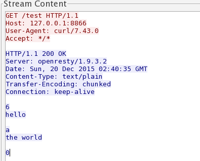

输出响应体
HTTP 响应报文分为三个部分：
- 1、 响应行： ① + ②
- 2、 响应头： ③
- 3、 响应体： ④

对于 HTTP 响应体的输出，在 OpenResty 中调用 ngx.say 或 ngx.print 即可。 通过查看官方 wiki 可知，这两者都是输出响应体，区别是 ngx.say 会多输出一个 \n 。如果你用的是浏览器完成的功能调试，使用这两者是没有区别的。但是如果使用各种终端工具，这时候使用 ngx.say 明显就更方便了。
ngx.say 与 ngx.print 均为异步输出
首先需要明确一下的，是这两个函数都是异步输出的，也就是说当调用 ngx.say 后并不会立刻输出响应体。参考下面的例子：
server {
listen 80;
location /test {
content_by_lua_block {
ngx.say("hello")
ngx.sleep(3)
ngx.say("the world")
}
}
location /test2 {
content_by_lua_block {
ngx.say("hello")
ngx.flush() -- 显式的向客户端刷新响应输出
ngx.sleep(3)
ngx.say("the world")
}
}
}
测试接口可以观察到， /test 响应内容是在触发请求 3s 后一起接收到响应体，而 /test2 则是先收到一个 hello 停顿 3s 后又接收到后面的 the world。
再看下面的例子：
server {
listen 80;
lua_code_cache off;
location /test {
content_by_lua_block {
ngx.say(string.rep("hello", 1000))
ngx.sleep(3)
ngx.say("the world")
}
}
}
执行测试，可以发现首先收到了所有的 "hello" ，停顿大约 3 秒后，接着又收到了 "the world" 。
通过两个例子对比，可以知道，因为是异步输出，两个响应体的 输出时机是不一样的。
如何优雅处理响应体过大的输出
如果响应体比较小，这时候相对就比较随意。但是如果响应体过大（例如超过 2G），是不能直接调用 API 完成响应体输出的。响应体过大，分两种情况：
- (1) 输出内容本身体积很大，例如超过 2G 的文件下载；
- (2) 输出内容本身是由各种碎片拼凑的，碎片数量庞大，例如应答数据是某地区所有人的姓名。
第 (1) 种情况，要利用 HTTP 1.1 特性 CHUNKED 编码来完成，一起来看看 CHUNKED 编码格式样例：

可以利用 CHUNKED 格式，把一个大的响应体拆分成多个小的应答体，分批、有节制的响应给请求方。
参考下面的例子：
location /test {
content_by_lua_block {
-- ngx.var.limit_rate = 1024*1024
local file, err = io.open(ngx.config.prefix() .. "data.db","r")
if not file then
ngx.log(ngx.ERR, "open file error:", err)
ngx.exit(ngx.HTTP_SERVICE_UNAVAILABLE)
end
local data
while true do
data = file:read(1024)
if nil == data then
break
end
ngx.print(data)
ngx.flush(true)
end
file:close()
}
}
按块读取本地文件内容（每次 1KB），并以流式方式进行响应。笔者本地文件 data.db 大小是 4G ， Nginx 服务可以稳定运行，并维持内存占用在几 MB 范畴。
注：其实 Nginx 自带的静态文件解析能力已经非常好了。这里只是一个例子，实际中过大响应体都是后端服务生成的，为了演示环境相对封闭，所以这里选择本地文件。
第 (2) 种情况，其实就是要利用 ngx.print 的特性了，它的输入参数可以是单个或多个字符串参数，也可以是 table 对象。
参考官方示例代码：
local table = {
"hello, ",
{"world: ", true, " or ", false, {": ", nil}}
}
ngx.print(table)
将输出：
hello, world: true or false: nil
也就是说当有非常多碎片数据时，没有必要一定连接成字符串后再进行输出。完全可以直接存放在 table 中，用数组的方式把这些碎片数据统一起来，直接调用 ngx.print(table) 即可。这种方式效率更高，并且更容易被优化。